前言
在今年的 Build 裡面，其中一個大新聞就是，Microsoft 併購了 Xamarin，而且不單是併購而已，也把許多項目給開源出來，處此之外，如果使用 Visual Studio Community 的朋友們，也提供了免費的使用，而使用 Enterprise 的朋友，也可以進階的對應到 Xamarin professional 和 enterprise 的功能。
( 詳細授權方式，請參考這邊 )
以前 Xamarin 是有錢人的玩具 (笑) ，而現在既然開放出來了，小弟當然就趕快來測試寫個 Hello World 試試看了~~
P.S 既然是要寫 iOS 的 Hello World ，那當然還是要準備一台 MAC ，
而且必須讓 Visual Studio 這台電腦，和 MAC 在同一個網域裡面，並且安裝好 Xcode。
( 當然，要用 VM 也是 OK 滴 ~~ )
p.s II 目前因為 Microsoft 才剛剛宣布 Xamarin 的計畫，而未來在帳號的處理上，或是流程上，是否會變得更加簡單，
目前不得而知，所以有參考到這篇文章的朋友們，還是別忘了去官網比對一下，也要注意一下這篇文章的日期。
準備 MAC 環境
為什麼要準備 MAC 環境，其實我們可以從 Xamarin 官網的這張圖看到，如下圖；
從下圖可以發現，其實 Visual Studio 裝上去的 Xamarin 套件，
會透過 SSH ( 網路 ) 的方式，和 Mac OSX 的 Agent 與 Xcode 進行存取，所以 Mac 那台上面，必須裝上 Xamarin 提供的 Agent
與 Xcode。
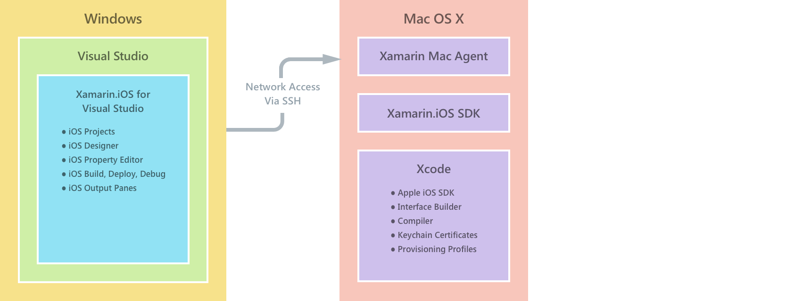
首先，我們要先去下載 Xamarin for OSX 的工具，可以到這邊下載。
這邊必須要填一下基本資料，因為是下載 OSX 版本，所以 I already have Visual Studio installed 就可以勾選起來了。
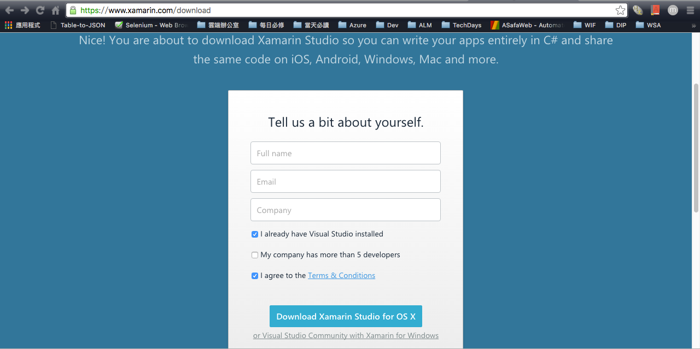
熟悉 OSX 的朋友，應該就會很清楚，點兩下，繼續安裝吧。
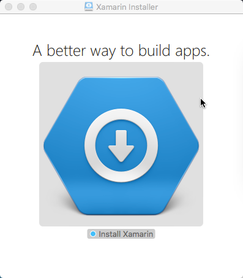
當然會有一些條款，請您同意…
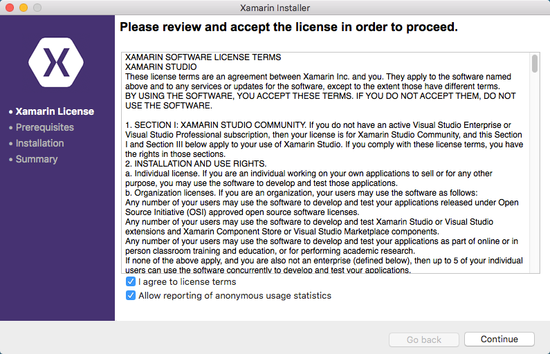
接著，你可以勾選你要安裝的東西，小弟我這邊是為了讓 Mac 也能進行開發 Android ，所以 Xamarin.Android 也勾起來了。
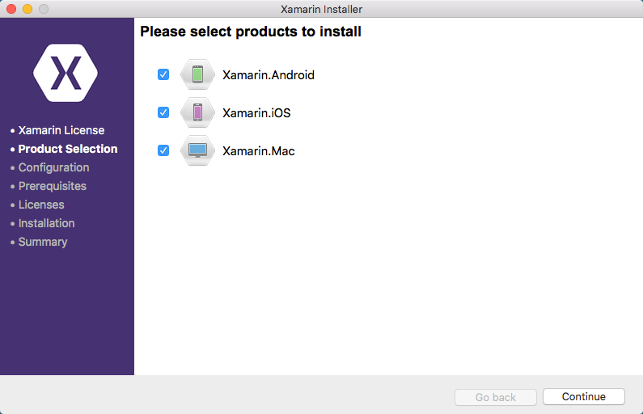
接著，就繼續吧，如果想改變路徑，也可以自己改變路徑。
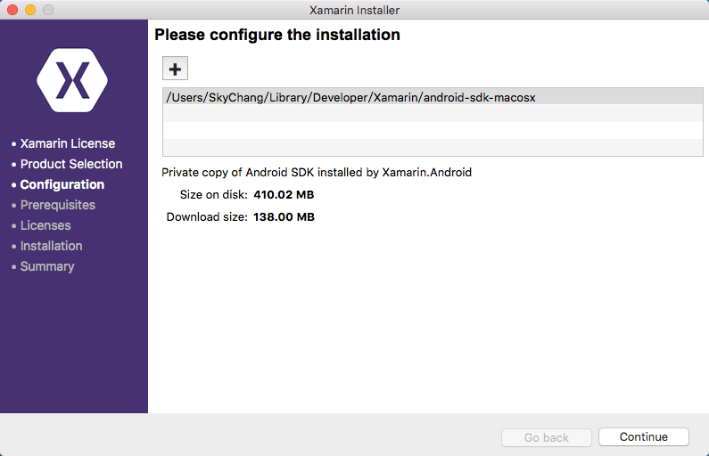
底下這張圖是題外話，通常裝 Xamarin 會順便裝 Mono 上去，而小弟我這邊的 Mono 是自己獨立裝上去的，
所以如果大家要自己裝 Mono 可以去 Mono 的官網進行安裝，或是讓 Xamarin 來協助安裝。
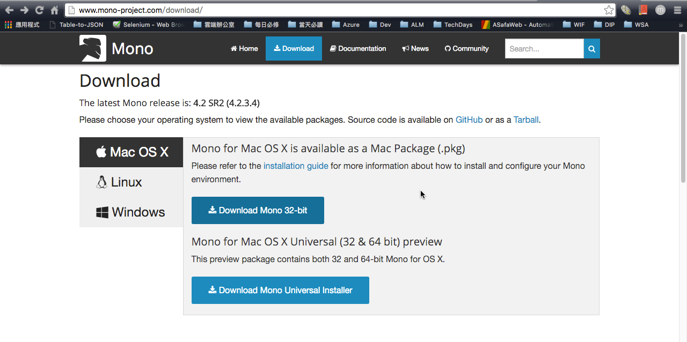
所以可以看到安裝程式預計安裝的清單，如上面所說的，因為小弟我已經自己安裝了 Mono ，所以清單就看不到 Mono 了。
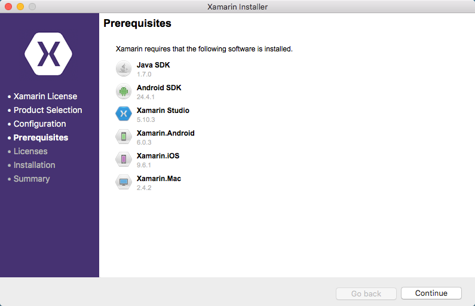
安裝過程，可以去喝個可樂，抬槓一下~~
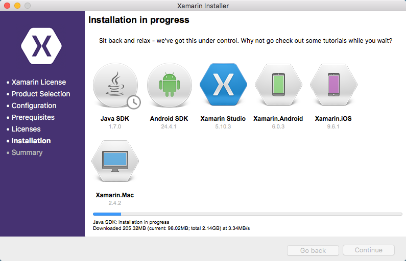
基本上，這樣就裝完了，而如果你打開 Xamarin Studio 的話，他會要你的 account ，
因為小弟也會在 Mac 上使用 Xamarin Studio 進行開發(娛樂)，所以等下會順便教大家註冊 ( 需要 MSDN 帳號 )。
啟用 MSDN 提供的 Xamarin 訂閱
完成了 Mac 上的 Xamarin 安裝後，因為小弟還希望能擁有 Xamarin Studio 的訂閱，所以小弟必須回到 MSDN 裡面，
啟動 Xamarin 的訂閱。
前往 MSDN 的網站裡面，基本上我們已經可以看到現在有提供 Xamarin 的相關訂閱服務了。
( 搞不好以前就有了，但我沒特別注意 XDD )
除此之外，也還有免費教學；和 Xamarin Test Cloud 的 25% 折扣
( Xamarin Test Cloud 是一個 Xamarin 提供的雲端服務，可以協助幫忙測試不同手機畫面功能是否正常 )
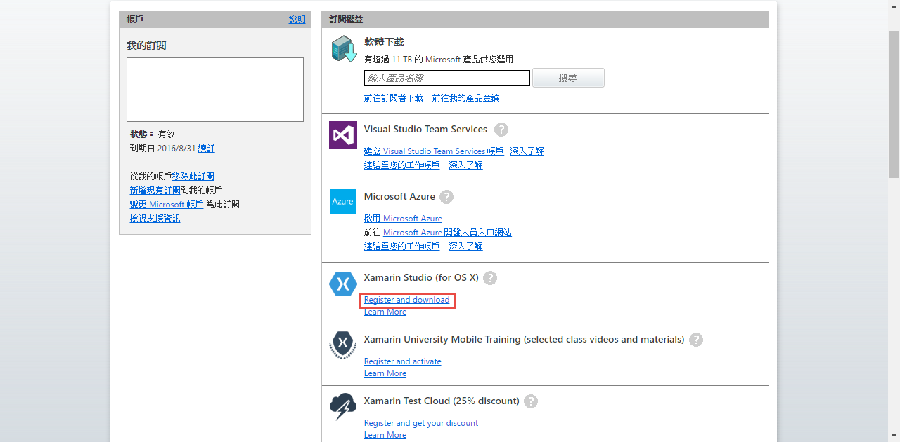
接著，會被導到 Xamarin 的官網，其實我們可以看到，完全不用付任何錢 ( 一年 )
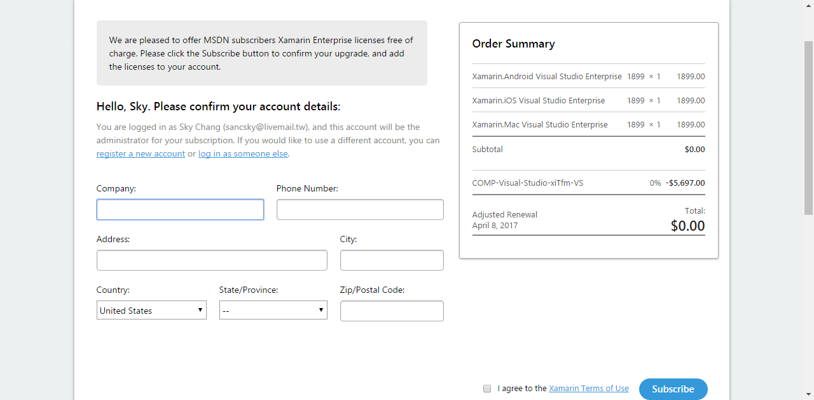
啟用 Xamarin Studio
之後，回到 Mac 上，我們就可以打開 Xamarin Studio 進行登入。
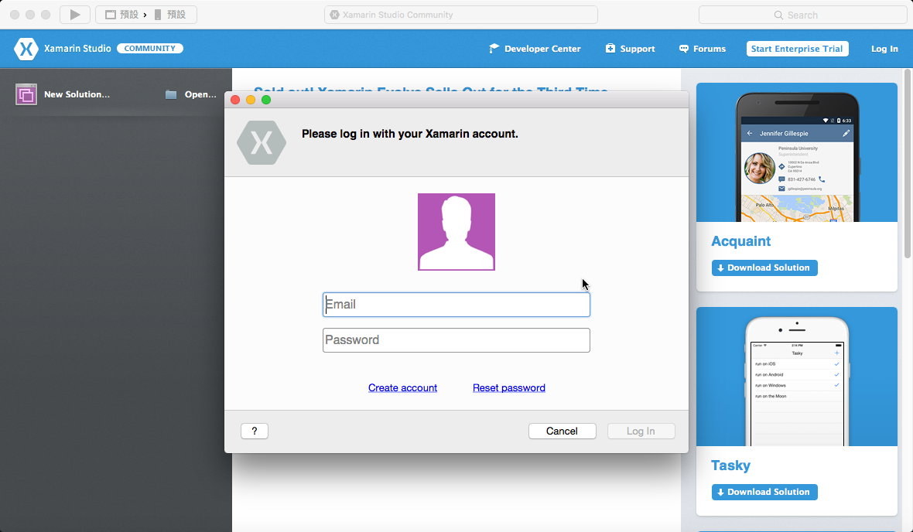
成功之後，就可以看到，授權方案是 Visual Studio Enterprise。
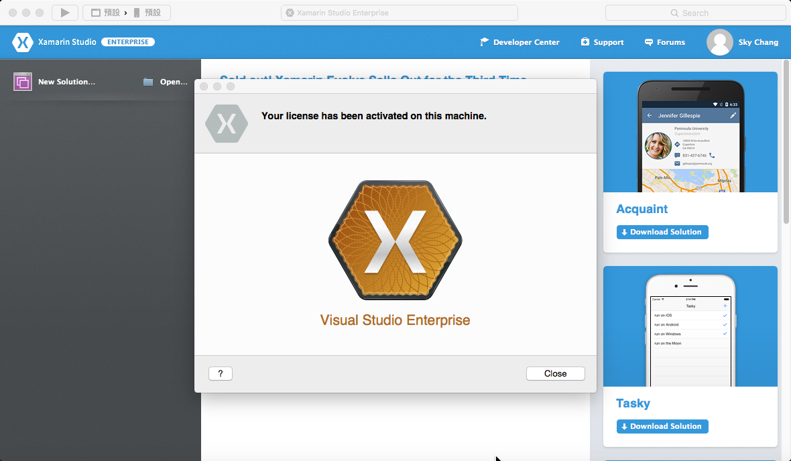
使用 Visual Studil 寫 iOS 的 Hello World
最後，回到 Visual Studio，我們就可以來寫個 Hello World；首先，我們要先在 Visual Studio 登入 Xamarin 帳號。
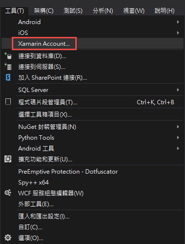
登入完成後，這邊我們就選擇 C# ，並且選擇 Single View App (iPhone )
( 如果登入發生 There was an internal error in the activation system. 的錯誤，請先往下看，後面會解釋 )
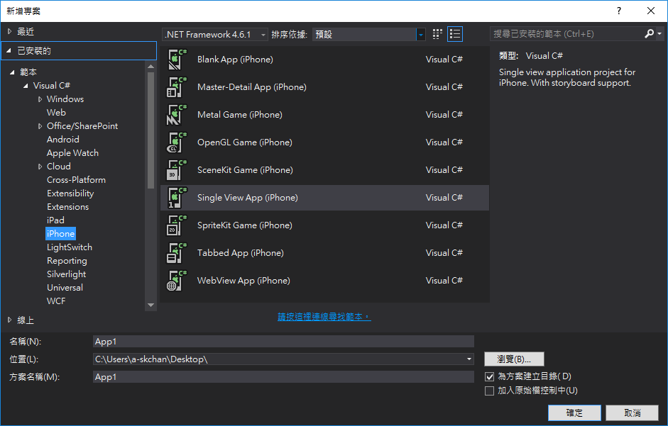
通常建置完畢後，會跳出要我們去打開 Mac 的遠端登入權限，如下圖，要勾選起來。
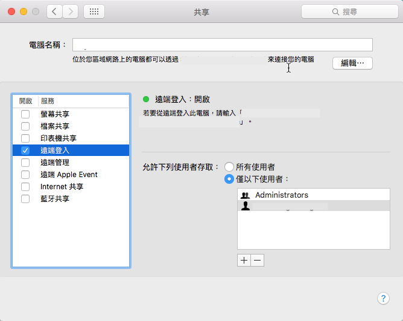
回到 Visual Studio 後，我們就可以 Add Mac
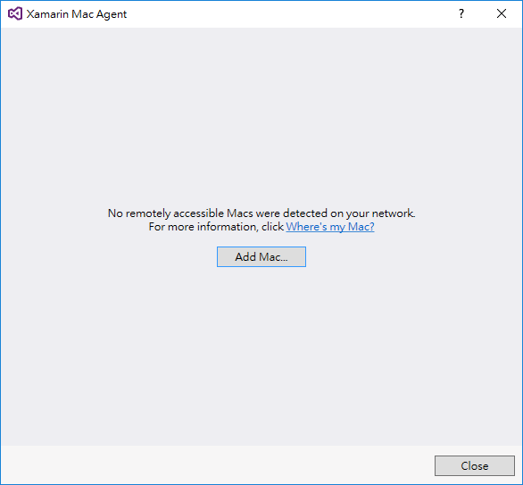
輸入 Mac 那台的 ip 位置，按下連線，就可以了。
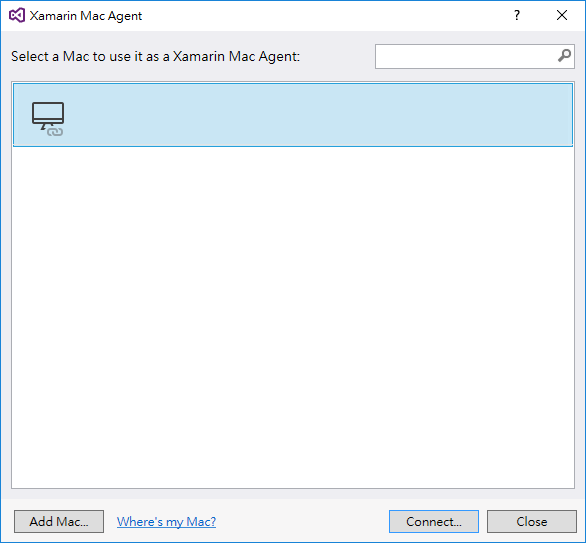
好吧，說可以是騙人的….
如果你使用的是 Visual Studio 2015 Update 2 內建的 Xamarin，
你應該會發現，怎麼連都連不上!!!!!
而如果重新登出 Xamarin Account ，並且重新登入後，你應該會得到底下畫面….
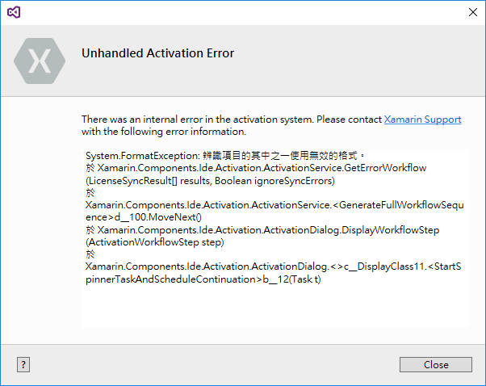
沒錯!!! 那是因為 Visual Studio 2015 Update 2 內建的 Xamarin 是 4.0.0 版本，但是現在官網已經到 4.0.3 版本了，
而 Mac 的 Agent 也是最新版本，所以內建的版本連不起來…也造成無法登入….
解決的方式，就是在回到 Xamarin 官網，下載 Windows 版本的安裝套件，並且安裝最新版本，就可以了…
成功安裝新版完成後，我們重新開啟專案，原則上 Mac 應該也可以連線上，這時，我們點選 Mainstoryboard ，就可以看到如同 Xcode 的設計畫面了。
我們可以簡單的拉一個 Label，並且寫一個 Hello World，並且進行偵錯!! ( 模擬器會出現在 Mac 上 )
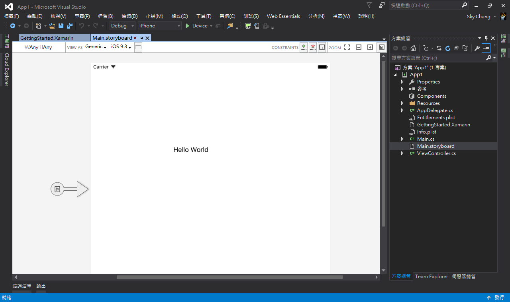
後記
基本上，這樣就完成了，比較要注意的是版本問題，但相信這個部分，未來會跟著改進，祝大家用 C# 寫 Code 愉快!!~